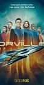

What is this site?
Stephen's Profile
Browser Extension
Stephen Klancher
Recent
Overall
Year Overview
Series
Lists
The Orville
List contains: 21 items, 0.4 hours.
Seasons:
2
|
3
|
Title Search (4+ characters):
Group:
None
Example Group: Me and Stephen
Who's seen it:
No filter
Everyone
No One
Anyone
Anyone Has Not
Who's commented:
No filter
Everyone
No One
Anyone
Anyone Has Not
Netflix:
No Filter
Available for Instant Watch
Netflix Link Known
Netflix Link Unknown
Missing Data:
No Filter
Runtime
Season
Release Year (YYYY) or Decade (YYYx):
Sort:
Normal
Newest Episodes First
Episodes in Order
Recently Watched First
Watched in Order
Newest Releases First
Releases in Order
Stephen Klancher
...has seen 0
...has not seen 0.4 hours
Timeline

Season 2
Ja'loja (2018)
Airs on 2018-12-30
S2 - E1 of
The Orville
Stephen Klancher
:
Primal Urges
Airs on 2019-01-03
S2 - E2 of
The Orville
Stephen Klancher
:
Home
Airs on 2019-01-10
S2 - E3 of
The Orville
Stephen Klancher
:
Nothing Left on Earth Excepting Fishes
Airs on 2019-01-17
S2 - E4 of
The Orville
Stephen Klancher
:
All the World is Birthday Cake
Airs on 2019-01-24
S2 - E5 of
The Orville
Stephen Klancher
:
A Happy Refrain
Airs on 2019-01-31
S2 - E6 of
The Orville
Stephen Klancher
:
Deflectors
Airs on 2019-02-14
S2 - E7 of
The Orville
Stephen Klancher
:
Identity (1)
Airs on 2019-02-21
S2 - E8 of
The Orville
Stephen Klancher
:
Identity (2)
Airs on 2019-02-28
S2 - E9 of
The Orville
Stephen Klancher
:
Blood of Patriots
Airs on 2019-03-07
S2 - E10 of
The Orville
Stephen Klancher
:
Lasting Impressions
Airs on 2019-03-21
S2 - E11 of
The Orville
Stephen Klancher
:
Sanctuary
Airs on 2019-04-11
S2 - E12 of
The Orville
Stephen Klancher
:
Tomorrow, and Tomorrow, and Tomorrow
Airs on 2019-04-18
S2 - E13 of
The Orville
Stephen Klancher
:
The Road Not Taken
Airs on 2019-04-25
S2 - E14 of
The Orville
Stephen Klancher
:
Season 3
Electric Sheep (2004)
Airs on 2022-06-02
S3 - E1 of
The Orville
Stephen Klancher
:
Shadow Realms
Airs on 2022-06-09
S3 - E2 of
The Orville
Stephen Klancher
:
Gently Falling Rain
Airs on 2022-06-23
S3 - E4 of
The Orville
Stephen Klancher
:
Twice in a Lifetime
Airs on 2022-07-07
S3 - E6 of
The Orville
Stephen Klancher
:
Midnight Blue
Airs on 2022-07-21
S3 - E8 of
The Orville
Stephen Klancher
:
Domino
Airs on 2022-07-28
S3 - E9 of
The Orville
Stephen Klancher
:
Future Unknown
Airs on 2022-08-04
S3 - E10 of
The Orville
Stephen Klancher
:
Watched an episode not known by IMDb?
Season:
-
Episode:
Date:
Comment: